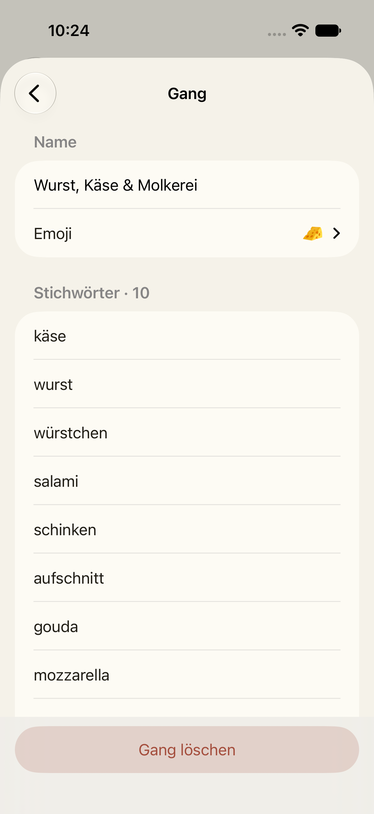
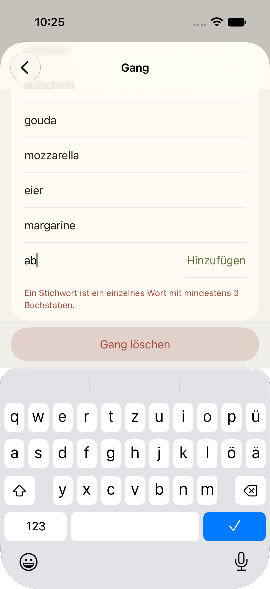
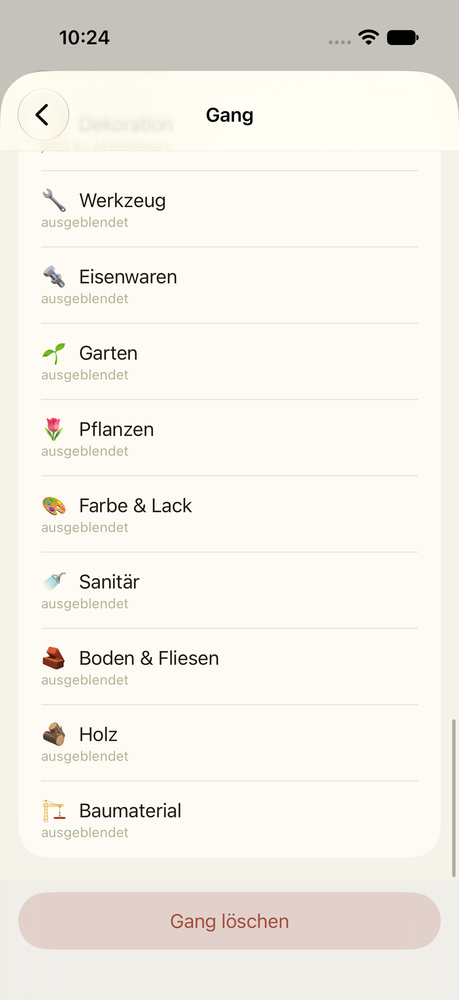
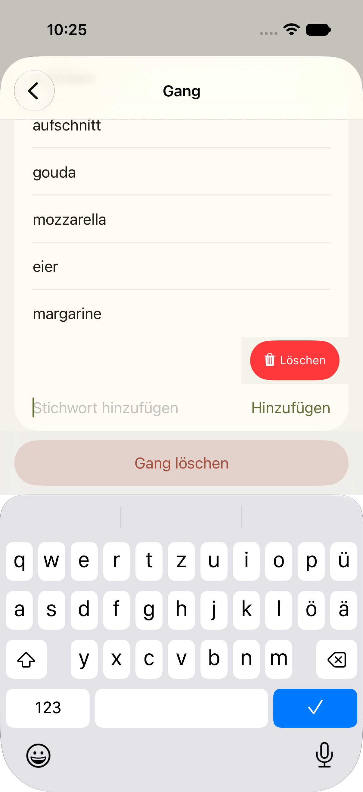

Stichwörter im Gang: oben oder unten?
Im freigegebenen Entwurf stehen die Stichwörter eines Gangs unter der Kategorienliste. Gebaut wurden sie darüber, und zwar nicht aus Nutzersicht, sondern weil die automatischen Tests nicht weit genug rollten. Das war ein Fehler im Vorgehen. Die Frage ist jetzt eine reine Produktentscheidung: Wo sollen die Stichwörter stehen?
Heute gebautStichwörter oben (Abweichung vom Entwurf)
Name, Emoji, dann die Stichwörter mit Feld „Stichwort hinzufügen“, danach die 35 Kategorien. Bei offener Tastatur rollt die Liste zum Hinweis.



Entwurf, freigegebenStichwörter unten
Wie in der Vorschau vom 01.11.: Kategorien zuerst, Stichwörter darunter. Nachgezeichnet in den echten App-Farben, hell und dunkel. Links der Blick beim Öffnen, rechts nach dem Rollen an allen Kategorien vorbei.
Zum Stichwort-Feld rollt man an rund 35 Zeilen vorbei (im Simulator etwa 2.000 Punkte, gut drei Bildschirmhöhen).
AlternativeKategorien eingeklappt, Stichwörter darunter
Die Reihenfolge bleibt wie im Entwurf (Kategorien vor Stichwörtern), aber der Gang zeigt nur seine eigenen Kategorien. Die Liste aller 35 Kategorien öffnet sich über eine Zeile „Kategorien zuordnen ›“ auf einer eigenen Seite. Damit ist alles ohne langes Rollen erreichbar. Kostet etwas mehr Umbau (eine Seite mehr, Tests anpassen).
Vergleich
| Oben (gebaut) | Unten (Entwurf) | Eingeklappt (Alternative) | |
|---|---|---|---|
| Stichwort pflegen | sofort | an 35 Zeilen vorbei rollen | sofort |
| Kategorien zuordnen | unter den Stichwörtern, rollen | sofort | ein Tipp mehr |
| Umbau ab heute | keiner | klein, Tests anpassen | mittel, neue Seite |
| Entspricht Freigabe | nein | ja | nein |
Weitere Befunde aus dem Durchlauf
Unabhängig von der Lage, alle mit Foto belegt, werden behoben:

- Kurze Trennlinie nur unter „Hinzufügen“, wenn ein Hinweis darunter steht.
- Das Feld sitzt ohne Tastatur leicht unter der Leiste „Gang löschen“.
- Titel „Kategorien einrich…“ abgeschnitten (seit Teil 2a so, kein neuer Fehler).